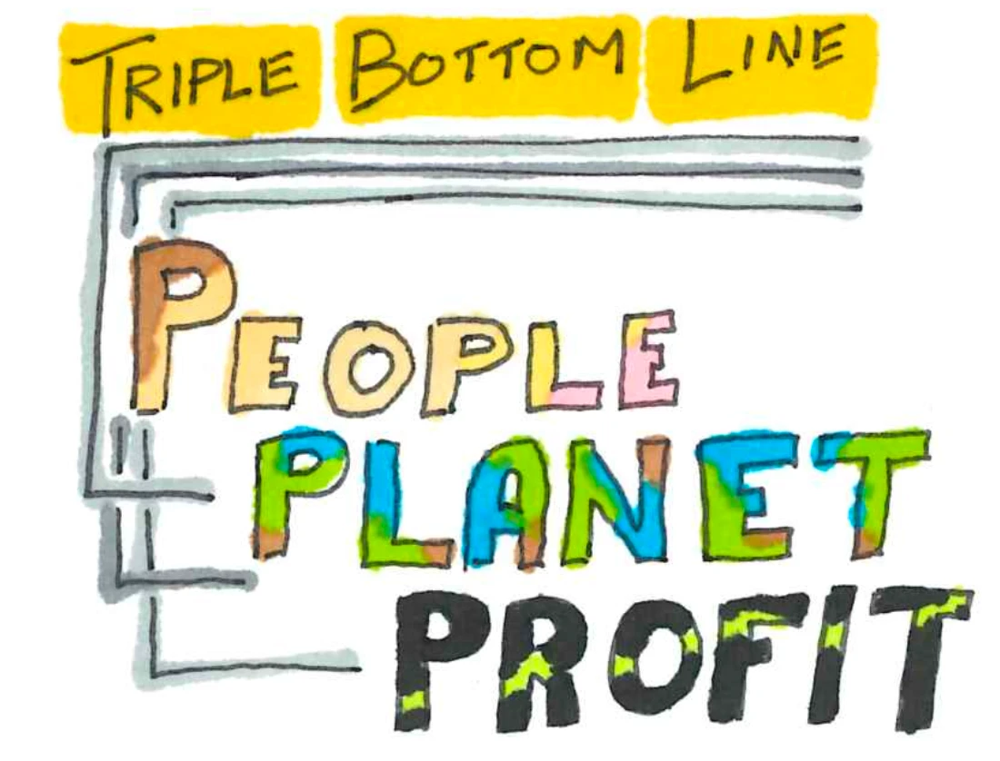
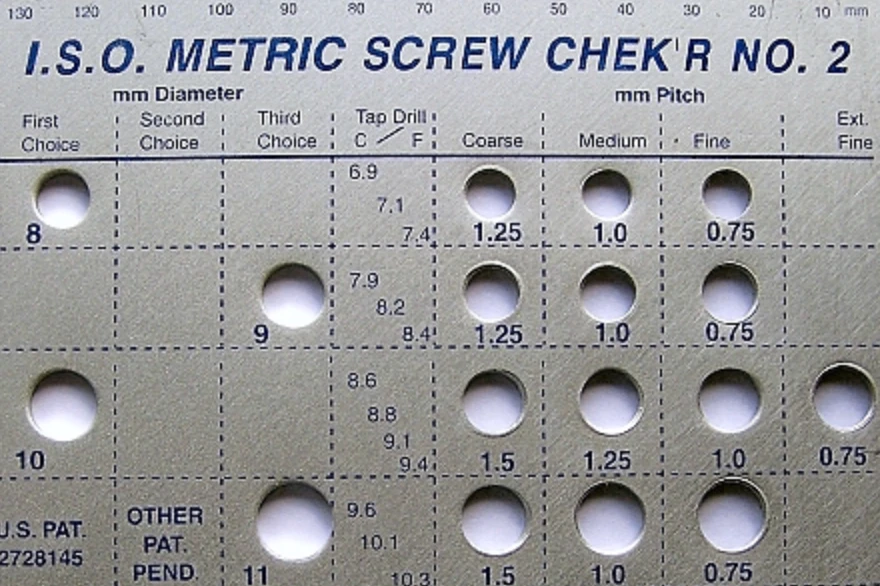

Everything a designer makes goes on existing in the world afterwards, doing things the designer may not have intended, to people who never agreed to any of it. That is the uncomfortable premise of Topic C, and C1.1 states it most directly. Design is not a neutral activity. Choosing what to make, for whom, and out of what is a series of ethical decisions that happen to be dressed up as technical ones.
Planned obsolescence is the objective most likely to start an argument in class, and it should. It is easy to treat as straightforward villainy, and sometimes it is, but the honest version is more complicated. Products do wear out, technologies do improve, and a designer choosing a five-year service life over a twenty-year one may be responding to genuine constraints rather than plotting against the customer. Learn to tell those cases apart and to argue the distinction, because "companies are greedy" is not an analysis and will not earn you marks. Safety standardisation in 1.1.2 is the quieter half of this topic and the one with the most visible consequences, since standards are mostly written in response to somebody having already been hurt.
Students must be able toOutline how design decisions have resulted in products that have had significant positive or negative impacts on a community or on the environment's sustainability.
Designers are responsible not only to their clients (the people who commission and pay for the work) but also to the broader community and the environment. This responsibility is embedded in professional design practice and increasingly enforced through law, regulation and market expectation.
Product lifecycle thinking frames this responsibility concretely. Every product has a life from raw material extraction through manufacturing, use, and eventual end-of-life disposal or recovery. Design decisions made early (about materials, manufacturing methods, energy use, repairability and end-of-life treatment) have consequences that outlast the designer's involvement.
The Brundtland Report (1987), produced by the UN World Commission on Environment and Development, introduced the concept of sustainable development: meeting the needs of the present without compromising the ability of future generations to meet their own needs. This shifted sustainable thinking from a specialist environmental concern into a mainstream design imperative.
{kind=link}

The Triple Bottom Line (TBL) provides a practical framework for evaluating design decisions across three dimensions:
- People: social impacts on users, workers and communities
- Planet: environmental impacts across the product lifecycle
- Profit: economic viability for the client and the business
Good design optimises all three. Poor design sacrifices two to maximise the third.
Negative examples make the stakes concrete. Minamata disease (mercury poisoning caused by a chemical factory discharging industrial waste into Minamata Bay, Japan, from the 1950s) caused severe neurological damage across an entire community and ecosystem for decades. The factory designed its process with no regard for People or Planet. Fast fashion provides a contemporary parallel: the industry contributes 8–10% of global CO₂ emissions, and 87% of textile waste goes to landfill each year.
Harmful materials such as PFAS ("forever chemicals"), used in waterproof coatings, non-stick cookware and firefighting foam, never break down naturally and accumulate in groundwater and biological tissue. Microplastics follow the same pattern. Designers who specify these materials, knowing their lifecycle consequences, bear ethical responsibility for the outcomes. Circular economy principles represent the positive counterpart: designing products from the start to be durable, repairable, modular and recoverable so that material value circulates rather than being discarded after a single use.
Microplastics are plastic fragments smaller than 5 mm, formed when larger plastic items break down through UV exposure, abrasion or washing rather than truly decomposing. Plastic does not biodegrade in any meaningful timeframe; it fragments into ever-smaller pieces that persist in soil, rivers, oceans and the air almost indefinitely.
Common sources include synthetic clothing fibres shed during washing, vehicle tyre wear, and the slow breakdown of single-use plastic packaging. Microplastics have now been detected in drinking water, food, and human blood and organ tissue, with health effects still under active research. Like PFAS, they illustrate a category of harm a designer can specify into a product (synthetic fabric, a particular packaging film) without it being visible at the point of sale.
- Synthetic textiles: polyester and nylon garments shed microfibres every time they are washed
- Tyres: normal road wear releases rubber and plastic particles into the environment
- Single-use packaging: plastic film and bottles fragment over years of sun and weather exposure

Develop a product from concept to market and watch a corner cut early resurface as a failed safety test, a certification refusal or a recall.
Students must be able toDiscuss how standards can help designers ensure the well-being, health and safety of users when using their products.
{kind=link}

Safety is a non-negotiable design responsibility. A product that injures its user has failed at the most fundamental level, regardless of how innovative or commercially successful it is. Ensuring safety requires more than good intentions: it requires standardisation.
Standardisation means agreeing on common rules, test procedures and specifications that apply across manufacturers, countries and industries. Standards serve three groups differently:
- Designers: Standards like ASTM F963 (US toy safety) and ISO 8124 (international toy safety) provide a clear framework of requirements: material toxicology, flammability, small-parts hazard, sharp edges and mechanical abuse testing. Designers know exactly what their product must pass, reducing guesswork, legal risk and the chance of a dangerous oversight.
- Manufacturers: Standardisation enables interchangeability: parts made to the same specification by different manufacturers fit together reliably. Bolt grades are a modern example: strength grade is stamped on every bolt head, so an M6 bolt from one country fits a nut made in another. This enables global supply chains and economies of scale.
- Consumers: Certification marks (CE for Europe, FCC for the United States, CCC for China) tell consumers that a product has been independently tested against a recognised standard. A parent buying a toy with ISO 8124 certification knows it has passed flammability and toxicity tests.
The historical origin of interchangeability: The Système Gribeauval (France, 1776) introduced standardised cannon components that could be repaired and replaced in the field. Honoré Blanc extended this to flintlock muskets in 1778, using standardised jigs and gauges to produce interchangeable parts. This meant that broken flint cock could be replaced from any compatible musket without a gunsmith. This was a revolutionary shift from craft production (every piece unique) to industrial standardisation (every piece identical within a tolerance).
Enforcement: Government agencies monitor compliance and can issue recalls, fines and import bans. The CPSC (Consumer Product Safety Commission) enforces standards in the United States; the ACCC (Australian Competition and Consumer Commission) does so in Australia. Failing to meet international standards means a product may be blocked at customs or rejected by retailers who face legal liability if an uncertified product injures a consumer.
Students must be able toDiscuss how obsolescence (including planned, social, style, functional, technological) affects the triple bottom line (TBL) and identify products that have been impacted.
Planned obsolescence (also called built-in obsolescence) is the deliberate design of products with a limited lifespan so that consumers are forced to purchase replacements more frequently than the underlying technology would require. Four types are commonly identified:
- Functional obsolescence: Products are engineered to break, wear out or fail sooner than necessary. A historical example is the 1920s Phoebus cartel (an agreement between major lightbulb manufacturers, including General Electric, to limit bulb life to around 1,000 hours even as technology existed to make them last longer). GE's flashlight bulbs in the 1930s were redesigned to burn brighter but die faster.
- Technological obsolescence: Products are made incompatible with newer software, hardware or standards, making them effectively unusable before they physically fail. Smartphones that cannot run updated operating systems after three years exemplify this: the device still works physically, but lack of security updates and app incompatibility makes continued use impractical.
- Style obsolescence (fashion obsolescence): Products are not physically broken but become culturally unfashionable as aesthetic trends shift. Examples include zoot suits (1930s–40s), paisley prints (1960s), bell-bottom jeans (1960s–70s) and shoulder pads (1940s and revived in the 1980s). A working jacket from 1985 is effectively unwearable today not because it has failed but because it reads as outdated.
- Social obsolescence: A product becomes obsolete because social norms or peer-group expectations have shifted: owning it signals low status even if it functions perfectly.
The Veblen effect describes a related consumer behaviour: goods whose demand increases as their price rises, because high price itself signals social prestige. This is exploited in style-obsolescence cycles by luxury brands.
Triple Bottom Line impact: Planned obsolescence trades short-term corporate Profit against harm to People (financial waste, exposure to replacement products that may contain harmful materials) and Planet (increased waste, resource depletion, CO₂ from manufacturing replacements). Kaizen (the Japanese philosophy of continuous improvement through small, incremental changes) represents a responsible design counterpart: products improve over time through iteration rather than being engineered to be replaced.
In 2017, Apple admitted to throttling processor speed on older iPhones with degraded batteries, and later paid over $500 million to settle the resulting lawsuits. Apple's explanation was that this prevented unexpected shutdowns as battery chemistry aged; critics called it a disguised way to push people toward buying a new phone. Printer manufacturers embed chips in ink cartridges that stop a printer working with refilled or third-party ink, officially framed as protecting print quality, while regulators in several countries have investigated the practice as anticompetitive.
Both companies have a genuine technical justification and a strong financial incentive pointing the same direction. Does a plausible engineering reason mean a practice isn't obsolescence, even when the company also benefits financially from it? What test, something you could point to and say "this proves it either way", would actually distinguish honest engineering from obsolescence dressed up as one?
Ten questions covering the designer's ethical responsibilities, safety standards, interchangeability and planned obsolescence. Select one answer per question, then click "Check all answers" to see your score and the explanations.
Children's bunk beds are governed by a European safety standard. Among its requirements are the dimensions below, each written to prevent a specific injury.
Table 1: Extract from the bunk bed standard
| Requirement | Value | Hazard addressed |
|---|---|---|
| Guard rail height above mattress | ≥ 160 mm | Falling from the upper bunk |
| Gap between guard rail and bed end | < 75 mm or > 230 mm | Head entrapment |
| Any accessible opening | < 60 mm or > 75 mm | Limb entrapment |
| Maximum ladder rung spacing | 300 mm | Slipping while climbing |
| Age marking on product | Not for children under 6 | Falls by younger children |
(a) State the responsibility of the designer that the standard in Table 1 exists to enforce. [1]
(b) Describe why the standard specifies gaps as either below 75 mm or above 230 mm rather than as a single maximum, see Table 1. [2]
(c) Explain why compliance with a standard is not the same as designing a safe product, see Table 1. [3]
(a) The responsibility to ensure products are safe to use.
(b) The hazard is a child's head passing into a gap and then not coming back out, so danger lies in the middle of the range rather than at one end. A gap under 75 mm is too small for a head to enter at all, and one over 230 mm is large enough that a head that enters can be withdrawn, so the standard bans the band between them rather than setting a maximum.
(c) A standard is a floor, and it records the hazards that have already caused injuries. It is written after the fact from reported incidents, so it cannot cover a hazard created by a design nobody has built yet, and a bed that introduces a new trapping point in a novel folding mechanism can comply with every line of Table 1 and still injure a child. Standards are also written as isolated dimensions and cannot describe how features combine: a ladder with compliant 300 mm rungs placed at the foot of the bed where a child must turn at the top is more dangerous than a compliant ladder at the side, and no number in the table captures that. The standard also says nothing about real use, and children treat bunk beds as climbing frames whatever the age marking says, so a designer who satisfies the table has met a legal minimum rather than discharged the duty the table exists to enforce.
(a) • It is a designer's responsibility to ensure their products are safe to use ✓
Award [1] for the correct responsibility up to [1 max].
(b) A designer has a responsibility to the needs of clients, their community and the environment, and safety standards encode specific injury mechanisms.
• The hazard is a head entering a gap and then not being withdrawable ✓
• Danger lies in the middle of the range, not at one extreme ✓
• Below 75 mm a head cannot enter the gap at all ✓
• Above 230 mm a head that enters can be withdrawn freely ✓
• A single maximum would permit the dangerous band immediately below it ✓
• The dimensions derive from anthropometric data on children's head and neck sizes ✓
Award [1] for each detail, leading to an account of why the gap is specified as two bands, up to [2 max].
(c) It is a designer's responsibility to ensure their products are safe to use, and standards set a minimum rather than a sufficient condition.
• A standard is a floor, and meeting it is the least a product may legally do ✓
• Standards are written after the fact from reported injuries ✓
• A hazard created by a design nobody has built yet cannot be covered ✓
• A novel folding mechanism could comply with Table 1 and still trap a child ✓
• Standards state isolated dimensions and cannot describe how features combine ✓
• A compliant ladder at the foot of the bed can be more dangerous than a compliant ladder at the side ✓
• Standards do not describe real use, and children use bunk beds as climbing frames ✓
• An age marking transfers responsibility to the buyer without removing the hazard ✓
• Compliance is testable and safety is not, so a designer can pass the test and still fail the duty ✓
Award [1] for each relevant reason / cause explaining why compliance differs from safety up to [3 max]. Credit responses that reason from Table 1.
An inkjet printer uses replaceable ink cartridges. Each cartridge carries a small chip. The printer reads the chip and refuses to print if it does not recognise it.
The manufacturer sells printers at or below cost and makes its profit on cartridges.
Table 2: Behaviour of the cartridge system
| Behaviour | Stated reason |
|---|---|
| Refuses third-party cartridges | Print quality assurance |
| Declares empty at a fixed page count | Prevents damage from printing dry |
| Refuses to print in black when one colour is empty | Print head maintenance requires all inks |
| Firmware update disables previously working cartridges | Security |
| Cartridge weighed after "empty" signal | None given; found to contain 18 % of original ink |
(a) State the type of obsolescence created by a firmware update that disables a working cartridge, see Table 2. [1]
(b) Outline why the 18 % figure in Table 2 weakens the manufacturer's stated reason for declaring a cartridge empty. [2]
(c) Evaluate the cartridge system against the designer's responsibility to the user and the environment, see Table 2. [3]
(a) Planned obsolescence, achieved by functional means.
(b) The stated reason is to prevent damage from printing dry, but a cartridge holding 18 % of its ink is nowhere near dry, so the shutdown is triggered long before the hazard exists. Declaring empty at a fixed page count rather than by measuring the remaining ink shows the trigger is a counter rather than a sensor, which is consistent with shortening cartridge life rather than protecting the print head.
(c) Some of the reasons carry weight. A print head can be damaged by running dry, colour inks are used in black printing on some heads, and firmware security is a real concern on a networked device, so none of the individual justifications is absurd. Against that, the pattern is what matters, and every one of these behaviours moves in the same direction, towards buying more cartridges from one supplier. A designer's responsibility is to the user, and a system that discards 18 % of a paid-for consumable, disables hardware the user already owns through an update they did not ask for, and refuses to perform a function it is capable of performing serves the manufacturer's revenue rather than the user's need. The environmental cost is direct: every cartridge retired early is plastic and electronics to landfill, and the chip that enforces the lockout is itself an electronic component added to a disposable part. The commercial logic is legitimate, since selling printers below cost has to be recovered somewhere, but recovering it by designing in failure is where the responsibility is breached.
(a) • Planned obsolescence ✓
• Functional obsolescence, planned ✓
Award [1] for the correct type of obsolescence up to [1 max]. Do not credit style, social or technological obsolescence.
(b) Products can become obsolete due to a number of factors and this can be planned.
• A cartridge holding 18 % of its ink is not dry ✓
• The shutdown occurs long before the stated hazard exists ✓
• A fixed page count is a counter, not a measurement of remaining ink ✓
• A genuine protective system would sense the ink level rather than count pages ✓
• The behaviour is consistent with shortening cartridge life rather than protecting the head ✓
• Nearly a fifth of a paid-for consumable is discarded ✓
Award [1] for each relevant brief point on why the 18 % figure weakens the stated reason up to [2 max].
(c) A designer has a responsibility to the needs of clients, their community and the environment when designing and creating products.
Points in the system's favour:
• A print head genuinely can be damaged by running dry ✓
• Some print heads use colour ink during black printing and head maintenance ✓
• Firmware security is a real concern on a networked device ✓
• Selling printers below cost has to be recovered somewhere ✓
• Controlling the consumable does give the manufacturer control over print quality ✓
Points against:
• Every listed behaviour moves in the same direction, towards more cartridge sales ✓
• 18 % of a paid-for consumable is discarded by design ✓
• A firmware update disables hardware the user already owns, without their asking ✓
• The printer refuses a function it remains capable of performing ✓
• Every cartridge retired early is plastic and electronics to landfill ✓
• The chip enforcing the lockout is itself electronics added to a disposable part ✓
• Blocking third-party cartridges removes the user's ability to choose a cheaper or refilled option ✓
Judgment:
• The commercial model is legitimate; recovering its cost by designing in failure is not ✓
• The stated reasons are individually plausible and collectively implausible ✓
Award [1] for each distinct strength / limitation, leading to an appraisal of the cartridge system against the designer's responsibility, up to [3 max]. Award a maximum of [2] where only one side is given, and a maximum of [2] where the response addresses the user but not the environment.
A disposable vaping device contains a lithium-ion cell, a heating coil, a reservoir of liquid and a small circuit board, sealed in a plastic body. It cannot be opened, refilled or recharged. It is discarded when the liquid runs out, typically after a few days.
An estimated five million are thrown away each week in the United Kingdom.
(a) Identify two hazards created when a disposable vaping device is placed in a household waste bin. [2]
The devices are sold in bright colours with fruit names, in packaging designed to sit at eye level near a till.
Table 3: Product features and their effect
| Feature | Effect on the intended adult user | Effect on under-18s |
|---|---|---|
| Bright colour, fruit naming | Product differentiation | Increases appeal |
| No charging or refilling | Convenience | Removes cost barrier to first purchase |
| Low unit price | Low commitment | Affordable from pocket money |
| Sealed body | Tamper resistance | Contents not visible or measurable |
(b) Outline the designer's responsibility to a group who are not the intended user, see Table 3. [2]
A manufacturer proposes a rechargeable version with a replaceable liquid pod. The device costs four times as much and lasts about a year.
(c) Describe how the rechargeable version changes the obsolescence built into the product. [2]
A government is considering banning disposable devices outright. The manufacturers argue that they are a legal product meeting all applicable standards, that the disposal problem is a failure of the recycling system rather than of the design, and that a ban would push users back to cigarettes.
(d) Explain where the responsibility for the consequences of this product lies, see Table 3. [4]
(a) Fire, because a lithium cell crushed in a refuse truck or a baler can ignite; and loss of the materials, because the lithium, copper and circuit board are dispersed into landfill instead of being recovered.
(b) A designer is responsible to the community affected by the product, not only to the person who buys it, so foreseeable use by a group the product is not sold to still falls within that duty. Table 3 shows that every feature chosen for the adult user has a stronger effect on under-18s, and a designer who can see that column and proceeds has made a choice rather than an oversight.
(c) The disposable version has obsolescence designed into it at a few days, because the sealed body makes the end of the liquid the end of the whole device including a working cell and circuit board. The rechargeable version separates the consumable from the durable parts, so what is discarded is the pod rather than the electronics, and the obsolescence of the device is moved out to about a year and governed by wear rather than by a design decision.
(d) The manufacturers' three arguments are worth taking seriously, and each is partly true.
Legality is the weakest of them. Meeting every applicable standard establishes that the product may be sold, not that it should have been designed this way, and standards lag products: no standard anticipated five million lithium cells a week entering household waste. A designer's responsibility runs ahead of the regulation rather than stopping at it.
The recycling argument is stronger but misplaced. It is true that a functioning collection system would recover these devices, but the design determines what the waste system is asked to do. A sealed body that cannot be opened means the cell cannot be separated even by someone who wants to, so the product is designed in a way that defeats recycling rather than merely failing to assist it. A designer who specifies a permanently sealed enclosure around a lithium cell has made the disposal problem, not inherited it.
The substitution argument is the most serious, because harm reduction is a real public health goal and a product that moves smokers away from cigarettes does genuine good. It does not, however, justify the disposable form specifically. Nothing about harm reduction requires the device to be thrown away after three days, and the rechargeable version delivers the same benefit without the waste, which shows the disposability is a commercial choice rather than a functional necessity.
Table 3 is where the responsibility is clearest. Every feature has a benign explanation for the adult user and a stronger effect on under-18s, and that pattern across four independent decisions is not accidental. Responsibility is shared, since the retailer, the regulator and the waste system all have a part, but the designer holds the part that the others cannot reach: the colour, the naming, the price point and above all the sealed body are settled at the drawing stage, and everyone downstream is left managing consequences that were fixed before the product existed.
(a) • Fire from a lithium cell crushed in a refuse truck or baler ✓
• Fire at a waste transfer or recycling facility ✓
• Loss of lithium, copper and circuit board materials to landfill ✓
• Leaching of nicotine liquid or heavy metals ✓
• Risk to waste workers handling the material ✓
• Plastic waste and litter ✓
Award [1] for each relevant hazard identified up to [2 max].
(b) A designer has a responsibility to the needs of clients, their community and the environment.
• The duty extends to the community affected, not only to the purchaser ✓
• Foreseeable use by a group the product is not sold to still falls within that duty ✓
• Every feature in Table 3 has a stronger effect on under-18s than on the intended user ✓
• A designer who can see that column and proceeds has made a choice, not an oversight ✓
• Foreseeability is the test: the effect does not have to be intended to be the designer's responsibility ✓
• Vulnerable groups warrant greater consideration, not less ✓
Award [1] for each relevant brief point on the responsibility to a group who are not the intended user up to [2 max].
(c) Products can become obsolete due to a number of factors and this can be planned.
• The disposable version becomes obsolete in a few days ✓
• The sealed body makes the end of the liquid the end of the whole device ✓
• A working cell and circuit board are discarded with the spent consumable ✓
• The rechargeable version separates the consumable from the durable parts ✓
• Only the pod is discarded, so the electronics are retained ✓
• Obsolescence moves out to about a year and is governed by wear rather than by design ✓
• The higher purchase price is offset over a longer service life ✓
Award [1] for each detail, leading to an account of how the obsolescence changes, up to [2 max].
(d) A designer has a responsibility to the needs of clients, their community and the environment, and that responsibility is not discharged by compliance alone.
On the legality argument:
• Meeting standards establishes the product may be sold, not that it should be designed this way ✓
• Standards lag products, and none anticipated five million cells a week in household waste ✓
• A designer's responsibility runs ahead of regulation rather than stopping at it ✓
On the recycling argument:
• It is true that a functioning collection system would recover the devices ✓
• The design determines what the waste system is asked to do ✓
• A sealed body means the cell cannot be separated even by someone who wants to ✓
• The design defeats recycling rather than merely failing to assist it ✓
• Specifying a sealed enclosure around a lithium cell creates the disposal problem ✓
On the substitution argument:
• Harm reduction is a real public health goal and carries genuine weight ✓
• Nothing about harm reduction requires the device to be discarded after three days ✓
• The rechargeable version delivers the same benefit without the waste ✓
• Disposability is therefore a commercial choice, not a functional necessity ✓
On Table 3:
• Every feature has a benign adult explanation and a stronger effect on under-18s ✓
• The pattern across four independent decisions is not plausibly accidental ✓
Apportioning responsibility:
• Responsibility is shared with the retailer, the regulator and the waste system ✓
• The designer holds the part the others cannot reach ✓
• Colour, naming, price point and the sealed body are all settled at the drawing stage ✓
• Everyone downstream manages consequences fixed before the product existed ✓
Award [1] for each relevant detail / reason / cause relating to where responsibility for the consequences lies up to [4 max]. Award a maximum of [3] where the response does not engage with at least one of the manufacturers' arguments. Credit responses that apportion responsibility across several parties provided the designer's part is identified.
Linking Questions
- How does the classification and properties of materials affect the designer's ability to meet their responsibilities to minimise negative impacts? (A3.1)
- What are the key considerations of ensuring products can be used safely when designing them to include mechanical and electronic systems? (A3.3) (A3.4) (B3.3) (B3.4)
- To what extent are there differences between the responsibility of the designer and the responsibility of the design student as they engage with the design process? (B2.1)
- How does the designer mitigate the impact of social, style, functional and technological obsolescence when using a design for sustainability strategy? (C2.1)
- How do designers ensure they design out obsolescence when working with a design for a circular economy strategy? (C2.2)
- To what extent is it the responsibility of the designer to ensure that the outcome of the life-cycle analysis for their product is relatively positive? (C3.2)